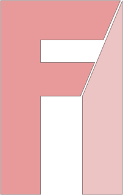

Main menu
Catalogs
Carts
Northern Lights, Murmansk, Russia (2018)
No retouch
Long Exposure
ƒ/2.8 aperture
ISO 5200
White balance 3500k
Shutter speed 10 seconds
Available on paper prints and wall art